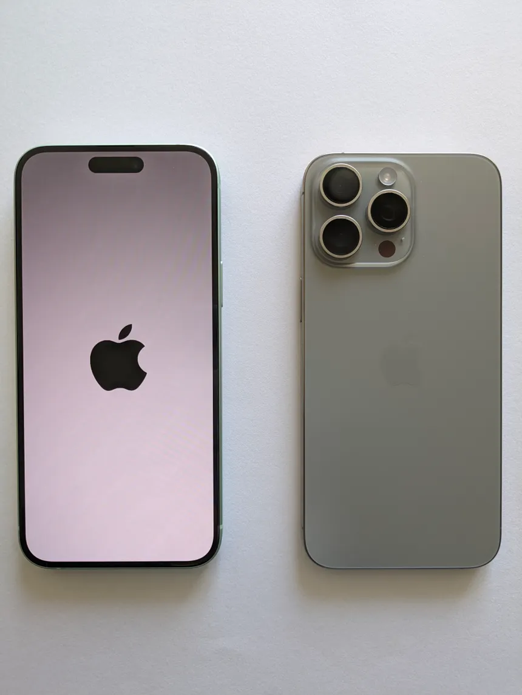

Apple presenta el iPhone 15 con innovaciones en cámara y rendimiento

Nuevo iPhone 15 con diseño en titanio
Apple lanzó oficialmente el iPhone 15 con mejoras significativas:
Mejoras en el sistema de cámaras
Mayor potencia gracias al chip A17 Bionic
Conectividad satelital para emergencias
Materiales reciclados y diseño sostenible
“Esta funcionalidad promete revolucionar la seguridad móvil, especialmente en zonas rurales o sin cobertura celular.”
El diseño presenta bordes más delgados y un acabado en titanio que ofrece mayor resistencia y ligereza. La disponibilidad está prevista para mediados de septiembre de 2025, con planes de expansión internacional.
NVIDIA lanza la serie RTX 50, prometiendo un salto en gráficos y eficiencia energética
La nueva serie RTX 50 de NVIDIA
NVIDIA ha presentado su nueva serie de tarjetas gráficas RTX 50 con estas características destacadas:
Arquitectura Ada Lovelace mejorada
Aumento de hasta 40% en eficiencia energética
Tecnologías avanzadas como ray tracing y DLSS 4.0
Mejor gestión térmica para mantener el rendimiento
“Los usuarios podrán disfrutar de gráficos más realistas y tasas de frames superiores.”
Los modelos van desde gamers casuales hasta profesionales que requieren potencia máxima para edición y diseño 3D. El lanzamiento está previsto para noviembre de 2025.